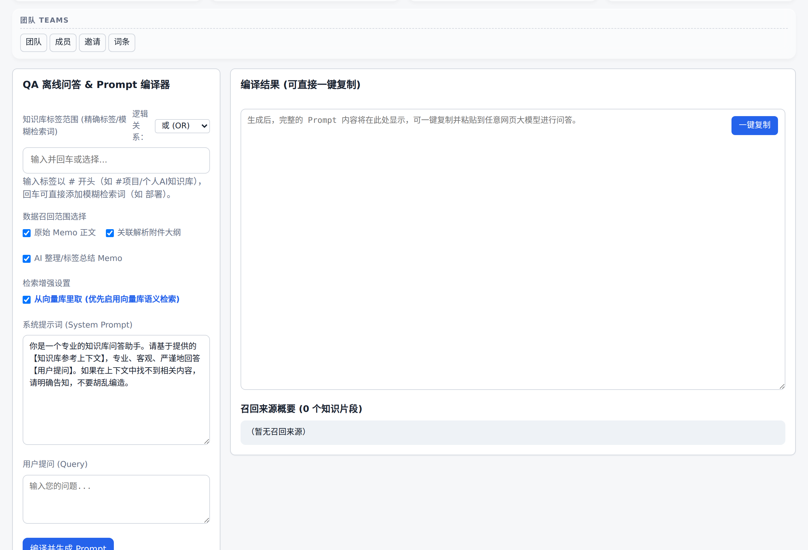
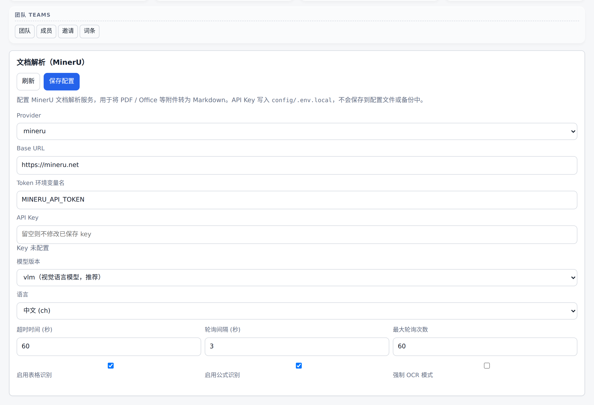
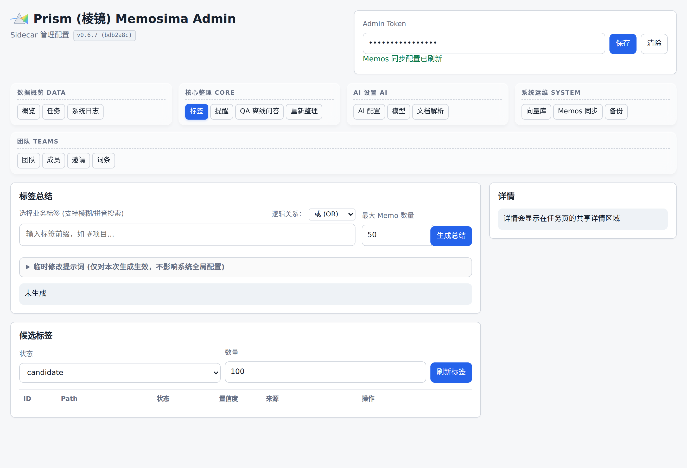
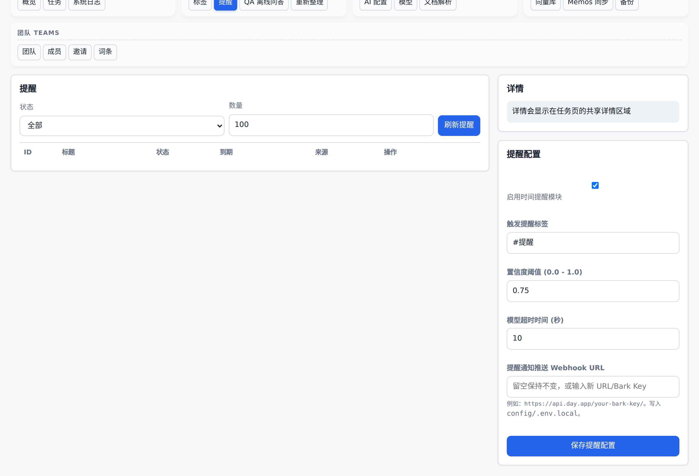

Prism (Memosima) 详细设计文档
本文档是面向源码贡献者的 全链路设计参考，从架构分层、模块边界、数据库 schema、任务生命周期、提示词契约、向量与提醒子系统，到 REST API 与部署拓扑。目标是让任何一位新加入的工程师，不必反复阅读源码即可定位修改点、评估影响半径。
1. 系统目标与设计原则
1.1 业务目标
- 在 Memos 既有「极速记录」体验之上，叠加 AI 折射式整理（标题 / 摘要 / 要点 / 待办 / 标签 / 双向引用）。
- 标签治理：杜绝 AI 与人工双向污染；引入「正式 / 候选」两层物理隔离。
- 本地优先 + 隐私可控：附件（Draw.io、Mind Elixir）100% 本地解析；MinerU 仅在必要时上云；向量服务可关闭。
- 个人级单租户：单实例绑定单
MEMOS_API_TOKEN，多用户必须物理隔离部署。
1.2 设计原则
- Sidecar 解耦：所有 AI 能力放在伴生进程，Memos 主站二进制保持纯净，升级不互锁。
- API + Worker 双进程：API 层只接收事件并入队，所有耗时处理移至 Worker，避免长轮询拖垮请求线程。
- 幂等 + 队列：每个 memo 事件唯一映射一条
jobs.idempotency_key，重投/重试不会重复整理。
- 配置三层：环境变量 >
config/.env.local（密钥） > config/*.yaml（静态结构），所有改动可热写回。
- 降级而非失败：嵌入服务、文档解析、Webhook 不可达时自动降级而非中断整条流水线。
- 可观测：所有关键阶段写入
system_logs 与 stdout，管理页面可在线检索。
2. 顶层架构
图 2-1：Prism 顶层架构 — 双 sidecar 容器共享 SQLite，所有外部依赖均可降级
2.1 进程拓扑
| 容器 | 进程入口 | 角色 |
|---|
memosima-gateway | caddy run | 边缘反代 + 路由分发 + 静态文档 |
memosima-memos | neosmemo/memos:stable | 原生 Memos 主站 |
memosima-sidecar | uvicorn memosima.api.app:create_app --factory | API + Admin UI |
memosima-worker | python -m memosima.worker.runner | 异步整理 / 提醒派发 |
两个 sidecar 容器共享同一个 data/sidecar/sidecar.db，依赖 SQLite WAL 模式保证并发读写安全；任务通过 claim_next_job() 的 UPDATE ... WHERE status='pending' 原子领取，多个 worker 可水平扩展（默认 1 个）。
3. 源码模块分层
src/memosima/
├── __init__.py # 包版本：importlib.metadata.version("memosima")
├── api/ # FastAPI 应用层
│ ├── app.py # create_app() 工厂，36 路由
│ ├── admin_ui.py # 管理后台 SPA（HTML/JS 内嵌字符串）
│ ├── security.py # require_admin Bearer 校验
│ └── webhooks.py # extract_memo_uid / build_idempotency_key
├── core/ # 业务无状态算法层
│ ├── config.py # AppConfig dataclass + load_env_file
│ ├── prompts.py # 提示词模板加载
│ ├── taxonomy.py # 标签治理（active/candidate/disabled/alias）
│ ├── attachments.py # Draw.io / Mind Elixir 本地解析
│ ├── document_parsers.py # MinerU REST 客户端
│ ├── admin_entry.py # 管理入口 memo 渲染
│ ├── summary.py # AI 整理 memo 文本组装
│ └── logging_handler.py # 自定义 Handler → system_logs 表
├── db/
│ └── store.py # SQLite Store + dataclass + migrate()
├── llm/
│ └── provider.py # OpenAICompatibleClient + EmbeddingClient
├── memos/
│ ├── client.py # Memos REST 封装
│ └── probe.py # CLI 探针：注册用户 / PAT / Webhook
└── worker/
└── runner.py # Worker 主循环 + 整理流水线
3.1 层间依赖规则
api 与 worker 同时依赖 core / db / llm / memos；二者 禁止互相 import。core 是纯函数包，不依赖 FastAPI、httpx 客户端；便于单元测试。db.store 是唯一允许执行 SQL 的位置；其它模块只看 dataclass。- 所有外部 HTTP 调用统一通过
httpx.AsyncClient，timeout 由各模块 owner 决定。
3.2 关键数据类（db/store.py）
下列字段为 Python dataclass 暴露给上层的属性名（不带 SQL 列的 _json 后缀；JSON 列在 store 内部已统一序列化/反序列化为 dict / list）。
Job(id, workspace_id, type, status, idempotency_key, payload: dict, result: dict | None, error, retry_count, created_at, updated_at)MemoRecord(id, workspace_id, memos_uid, type, source_memo_uid, content_hash, status, created_at, updated_at)TagCandidateRecord(id, workspace_id, path, parent_path, status, reason, source_memo_uid, similar_tags: list[str], confidence, reviewer_note, created_at, updated_at)BusinessTagRecord(id, workspace_id, path, status, source, created_at, updated_at)ArtifactRecord(id, workspace_id, memo_uid, resource_uid, kind, content_markdown, metadata: dict, created_at)ReminderRecord(workspace_id, source_memo_uid, title, body, due_at, timezone, status, confidence, raw_text, sent_at, error, created_at, updated_at, ...)VectorUnitRecord(workspace_id, memo_uid, chunk_text, embedding: list[float], created_at, ...)SystemLogRecord(timestamp, level, component, message, ...)
4. 数据库 Schema
数据库文件：data/sidecar/sidecar.db（默认）；统一携带 workspace_id，未来可演进多工作区。下面列出的是 SQLite 列名（带 _json 后缀的列由 store 内部统一负责 JSON 序列化）；上层调用方应只看 §3.2 中的 dataclass 字段，无需感知列后缀。
-- 工作区（当前固定 default）
workspaces(id PK, name, created_at, updated_at)
-- memo 元数据（既包含原始 memo 也包含 AI 整理 memo）
memos(id PK, workspace_id FK, memos_uid, type, source_memo_uid, content_hash, status,
created_at, updated_at,
UNIQUE(workspace_id, memos_uid, type))
-- 任务队列（核心）
jobs(id PK, workspace_id FK, type, status, idempotency_key, payload_json, result_json,
error, retry_count, created_at, updated_at,
UNIQUE(workspace_id, idempotency_key))
INDEX idx_jobs_status_created(status, created_at)
-- 候选标签队列
tag_candidates(id PK, workspace_id FK, path, parent_path, status, reason,
source_memo_uid, similar_tags_json, confidence, reviewer_note,
created_at, updated_at,
UNIQUE(workspace_id, path))
INDEX idx_tag_candidates_status_created(status, created_at)
-- 正式业务标签
business_tags(id PK, workspace_id FK, path, status, source, created_at, updated_at,
UNIQUE(workspace_id, path))
INDEX idx_business_tags_status_path(status, path)
-- 附件解析结果
artifacts(id PK, workspace_id FK, memo_uid, resource_uid, kind, content_markdown,
metadata_json, created_at,
UNIQUE(workspace_id, memo_uid, resource_uid, kind))
INDEX idx_artifacts_memo_kind(workspace_id, memo_uid, kind)
-- 提醒事项
reminders(id PK, workspace_id FK, source_memo_uid, title, body, due_at, timezone,
status, confidence, raw_text, sent_at, error, created_at, updated_at,
UNIQUE(workspace_id, source_memo_uid, due_at, title))
INDEX idx_reminders_status_due(status, due_at)
-- 向量分块
vector_units(id PK, workspace_id FK, memo_uid, chunk_text, embedding_json, created_at)
INDEX idx_vector_units_memo_uid(workspace_id, memo_uid)
-- 结构化系统日志
system_logs(id PK, workspace_id FK, timestamp, level, component, message)
INDEX idx_system_logs_timestamp(timestamp)
4.1 状态机
| 实体 | 取值 | 转移触发 |
|---|
jobs.status | pending → running → succeeded / failed / waiting_user | claim_next_job() / process() / retry 路由；waiting_user 表示需要人工补充信息后再继续 |
memos.status | pending / linked / ignored | 在整理结束后由 worker 写回 |
tag_candidates.status | pending / approved / rejected | Admin 审核接口 |
reminders.status | pending / sent / failed / cancelled | Worker _send_due_reminders_once()（注意：cancelled 双 L 拼写） |
4.2 内置 PRAGMA
PRAGMA journal_mode = WAL：双进程并发读写。PRAGMA foreign_keys = ON：strict FK；reset 时显式关闭再开。
5. 任务生命周期
5.1 Worker 主循环（worker/runner.py: Worker.run_once）
# 简化伪代码
async def run_once() -> bool:
if await self._send_due_reminders_once(): # 1. 优先派发到期提醒
return True
job = self.store.claim_next_job() # 2. 抢占下一个 pending job
if job:
await self._process_job(job)
return True
if await self._ensure_admin_entry_memo_once():# 3. 维护管理入口 memo
return True
return await self._poll_memos_once() # 4. 主动轮询 memos（poll/both 模式）
外层以 worker.poll_interval_seconds（默认 2s）作为节流；任何一步处理过工作就立即重入下一轮，避免拥塞。
5.2 memo → AI 整理 端到端时序
图 5-1：单条 memo 从写入到 AI 整理完成的完整时序（11 步，所有外部调用支持降级）
5.3 错误与重试
- 任意异常 →
jobs.status = failed，retry_count += 1，error = traceback.format_exc()。
worker.max_attempts（默认 3）内会被 claim_next_job() 自动重新拉起；超过则停留在 failed，由管理员手动 POST /admin/jobs/{id}/retry 恢复。- 嵌入 / MinerU / Reminder Webhook 不可达：降级而非失败，主任务仍可完成；降级原因记录到
system_logs。
5.4 幂等键
webhooks.build_idempotency_key(memo_uid, event)：以 memo_uid + 事件类型派生，确保 Memos 重投同一事件不会重复入队；jobs 表上 UNIQUE(workspace_id, idempotency_key) 提供数据库级守门。
6. LLM Provider 抽象（llm/provider.py）
6.1 OpenAICompatibleClient
- 统一走 OpenAI Chat Completions 协议（base_url + Bearer）。
- 三个高层方法：
organize_memo() / extract_reminders() / summarize_tag()。
- 通用规则：
response_format = json_object（除 tag_summary 使用 markdown）。- timeout 下限 90s（推理时间偏长，避免误杀）。
extra_body 透传，例如 DeepSeek 的 thinking.type=enabled。
6.2 Provider 切换
config/models.yaml.default_provider 控制默认入口。- 管理页面
/admin/ui#models 调用 PUT /admin/models：
- 非密钥字段（
model / temperature / extra_body）写回 config/models.yaml。
api_key_env 指定的 Key 写入 config/.env.local（不入备份/Git）。
- 切换后无需重启 API，但建议触发一次空
organize_memo 验证连通性。
6.3 EmbeddingClient
- 当前实现：SiliconFlow
/v1/embeddings（OpenAI-compatible）。
- 批量上限 16 chunk；超出自动分批，串行调用。
- 输出向量直接 JSON 序列化存入
vector_units.embedding_json（FLOAT[]）。
6.4 检索算法
- Query 端：embed 单条 query 向量。
- 库端：
SELECT * FROM vector_units WHERE workspace_id = ? 全量取出，在 Python 层计算 cosine similarity → top-K。
- 适合个人级 ≤ 10 万 chunk；超过时建议接入 sqlite-vss / 外置向量库（见 §14 扩展点）。
6.5 QA 双通道
POST /admin/qa/generate-prompt：
use_vector=true：embedding → 向量召回 → 后置标签 + AND/OR 过滤。use_vector=false 或 embedding 不可用：业务标签 + 正文模糊（SQLite LIKE + 标签匹配）。- 两路均融合
artifacts.content_markdown 大纲作为高保真上下文。
- 输出一段「超级 Prompt」，前端「一键复制」。

图 6：QA 离线问答面板（#qa）—— 上述双通道（use_vector true/false）由这里的开关切换；最后一行的「超级 Prompt」就是前端「一键复制」的入口。
7. 附件解析流水线（core/attachments.py + core/document_parsers.py）
7.1 准入
limits.allowed_parse_extensions（默认含 .txt / .md / .doc(x) / .xls(x) / .ppt(x) / .pdf / .drawio / .drawio.svg / .json）。- 单个附件 ≤
limits.max_attachment_mb（默认 50MB）。
7.2 解析器路由
| 后缀 | 走向 | 说明 |
|---|
.drawio | 本地 zlib + base64 + XML | 抽取所有 <mxCell value>，过滤 HTML。 |
.drawio.svg | 本地从 SVG <diagram> 节点抽嵌入字节 | 与上同。 |
| Mind Elixir JSON | 本地 DFS 递归 | 转 Markdown 嵌套列表。 |
.txt / .md / .json（无 schema） | 直接读取 | 直接当作文本入 artifacts。 |
.doc(x) / .xls(x) / .ppt(x) / .pdf | MinerU /api/v4/file-urls/batch → /api/v4/extract-results/batch/ | 周期 poll_interval_seconds，至多 max_polls 次。 |
7.3 缓存与幂等
artifacts UNIQUE(workspace_id, memo_uid, resource_uid, kind) 防止重复解析。metadata_json 存放原始资源信息、MinerU task id、解析耗时等。

图 7：文档解析面板（#docparser）—— 7.2 节路由的 provider 选择与 limits（max_attachment_mb / allowed extensions / 缓存粒度）全部在此 UI 化。
8. 标签治理（core/taxonomy.py + config/taxonomy.yaml）
8.1 三类标签
- System Tags：
#系统/... 固定前缀，例如 #系统/AI整理、#系统/标签待审核、#系统/处理失败。
- Active Business Tags：受审核业务标签（
config/taxonomy.yaml.business_tags）。
- Candidate Tags：AI 提议或用户手写但尚未在 active 列表里的标签，进
tag_candidates 队列。
8.2 治理规则
- 唯一末级：同名末级标签全局唯一，禁止
#项目/数管 与 #其他/数管 并存。
- 别名归一：
aliases[].alias → target 自动映射，提交 AI 之前先归一。
- 禁用列表：
disabled[] 中的标签即便 AI 提出也被丢弃。
- 拼音模糊去重：候选标签入队前做拼音首字母比对，去除
#部署 / #deployment / #deploy 类污染。
- 限额：
limits.max_ai_active_tags（默认 5）、limits.max_ai_candidate_tags（默认 2）。
8.3 审核流
GET /admin/tag-candidates 拉队列。POST /admin/tag-candidates/{id}/approve：升级为 business_tags 并写回 config/taxonomy.yaml。POST /admin/tag-candidates/{id}/reject：标记 rejected，可补充 reviewer_note。

图 8：标签面板（#tags）—— 下方候选标签队列即 8.3 节的 REST 接口对应的 UI；通过/拒绝按钮直接调用 approve/reject 接口并热写 config/taxonomy.yaml。
9. 提醒子系统
9.1 触发与抽取
- 整理流水线检测到正文包含
reminders.trigger_tag（默认 #提醒）。
- 调用
llm.extract_reminders()：携带 now、timezone（默认 Asia/Shanghai）。
- LLM 返回
items[].due_at（ISO 8601 + 时区偏移），低于 confidence_threshold（默认 0.75）或 needs_clarification=true 会被打回为待澄清。
9.2 派发
- Worker 每个 tick 优先调用
_send_due_reminders_once()：
SELECT * FROM reminders WHERE status='pending' AND due_at <= now()。- 以
reminders.request_timeout_seconds（默认 10s）超时调用 REMINDER_WEBHOOK_URL。
- 兼容 Bark 表单契约：
{title, body}。
- 成功 →
status=sent, sent_at=now()；失败 → status=failed, error=...。
- 管理端
POST /admin/reminders/{id}/retry 可手动重发；cancel 取消未发送的提醒。
9.3 配置热修改
GET/PUT /admin/reminders/config 实时调整触发标签、阈值、Webhook URL；Webhook URL 写入 config/.env.local。

图 9：提醒面板（#reminders）—— 9.1 触发/抽取的结果（提醒列表）与 9.3 配置热修改（触发标签、阈值、Webhook URL）在同一面板，左侧 retry/cancel 对应 REST 接口。
10. 备份 / 恢复
10.1 格式
ZIP 包，根目录布局（实际由 _create_backup_archive / _backup_config_files 生成）：
manifest.json { "kind": "memosima-sidecar-backup",
"version": 1, # 整数版本号，便于校验
"created_at": "2026-05-27T...",
"workspace_id": "default",
"database_path": "data/sidecar/sidecar.db",
"config_files": ["config/app.yaml", ...],
"restore_behavior": "database_only" }
database/sidecar.db # 通过 SQLite Online Backup API 拷贝
config/app.yaml # 备份只包含 4 份 yaml 配置，便于查阅 / 二次手工恢复
config/models.yaml
config/prompts.yaml
config/taxonomy.yaml
⚠ 备份不包含 config/.env.local：所有 API Key、Webhook 密钥等敏感凭据均不会进入 ZIP，避免备份文件泄露密钥；恢复后请在新环境单独配置环境变量或重新通过 Admin UI 写入 Key。
10.2 端点
- GET
/admin/backups/download → 流式 ZIP，要求 Admin Bearer。
- POST
/admin/backups/restore（multipart/form-data, file=...）→ 仅覆盖 sidecar.db，返回体 restored_configs=false，ZIP 内 config/*.yaml 不会被写回磁盘；如需替换配置请人工解压后手动放置。建议先 docker compose stop sidecar-worker，恢复完成后再启。
10.3 backup.sh / restore.sh
- 宿主机脚本：
docker compose stop → tar 整个挂载目录（含 Memos 主站资源、.env、config/.env.local）→ 远端 scp。
- 与 Admin API 提供的逻辑备份 互补：Admin API 只覆盖 sidecar 数据库（配置仅作快照查阅）；宿主脚本覆盖 Memos 原始库与全部密钥文件，是真正的「整机搬家」方案。
11. 管理 REST API 全量索引
所有 /admin/* 接口默认要求 Authorization: Bearer ${SIDECAR_ADMIN_TOKEN}，校验逻辑在 api/security.py: require_admin。
例外：/admin/ui（管理后台 SPA 单页 HTML 本身）以及 /health、/webhooks/memos 公开免鉴权——SPA 加载后调用的所有 admin API 仍需在浏览器侧带 Bearer，未鉴权访问 UI 只能看到静态壳。如需更高隔离请在网关层为 /admin/ui 单独加 Basic Auth 或 IP 白名单。
字段细节以 src/memosima/api/app.py 中对应路由的 Pydantic 模型为准。
11.1 健康与入口
| 方法 | 路径 | 说明 |
|---|
| GET | /health | 返回 {status, version, worker_heartbeat_at} |
| GET | /admin/ui | 内嵌 HTML/JS 单页 |
| POST | /webhooks/memos | Memos 推送回调，202 Accepted；内部按 memo_uid 入队 |
11.2 任务队列
| 方法 | 路径 | 说明 |
|---|
| GET | /admin/jobs | 分页 + 过滤 (status/type)；status 取值 pending / running / succeeded / failed / waiting_user |
| POST | /admin/jobs/{job_id}/retry | 强制将单个 failed / waiting_user Job 重置为 pending；可选 body {prompt_override: {system, user}} 覆盖本次 LLM 提示词 |
| POST | /admin/jobs/reprocess-memo | body 必填 memo_url_or_uid（支持完整 Memos URL 或裸 UID），可选 model_provider / model_name / prompt_override，强制重新整理指定 memo |
| POST | /admin/jobs/batch-reprocess-tag | body 字段 tag（单标签）或 tags（标签数组）+ relation（AND/OR，默认 OR），可选 model_provider / model_name / prompt_override；按业务标签批量重排 |
11.3 提示词
| 方法 | 路径 | 说明 |
|---|
| GET | /admin/prompts | 一次性返回三种模板 |
| PUT | /admin/prompts/organize-memo | 写回 config/prompts.yaml.organize_memo |
| PUT | /admin/prompts/tag-summary | 写回 config/prompts.yaml.tag_summary |
| PUT | /admin/prompts/reminder-extraction | 写回 config/prompts.yaml.reminder_extraction |
11.4 模型
| 方法 | 路径 | 说明 |
|---|
| GET | /admin/models | 列 provider + default + 已配置的 Key 状态（不回显明文） |
| PUT | /admin/models | 切换默认 provider/model；可选附带 API Key 写入 .env.local |
11.5 标签
| 方法 | 路径 | 说明 |
|---|
| GET | /admin/tag-candidates | 分页候选标签 |
| POST | /admin/tag-candidates/{id}/approve | 升级为正式业务标签 |
| POST | /admin/tag-candidates/{id}/reject | 拒绝并记录原因 |
| GET | /admin/tags/business | 列出全部正式业务标签 |
| POST | /admin/tag-summaries | 触发标签总结 Job；body 字段 tag（单标签）或 tags（数组）+ relation（AND/OR，默认 OR），limit 默认 50（1-200）；可选 system_prompt_override / user_prompt_override（注意是两个独立字段，不是 prompt_override） |
11.6 提醒
| 方法 | 路径 | 说明 |
|---|
| GET | /admin/reminders | 列表 + 过滤 (status) |
| POST | /admin/reminders/{id}/retry | 重发 |
| POST | /admin/reminders/{id}/cancel | 取消 pending |
| GET / PUT | /admin/reminders/config | 触发标签、阈值、Webhook |
11.7 向量与 QA
| 方法 | 路径 | 说明 |
|---|
| GET / PUT | /admin/vector-search/config | provider、模型、Key、enabled 开关 |
| POST | /admin/qa/generate-prompt | body: {question, tags?, logic?, use_vector?} → 返回拼装好的「超级 Prompt」 |
11.8 文档解析
| 方法 | 路径 | 说明 |
|---|
| GET / PUT | /admin/document-parser | MinerU Token、model_version、超时与轮询参数 |
11.9 Memos 同步
| 方法 | 路径 | 说明 |
|---|
| GET / PUT | /admin/memos/config | base_url / PAT / 入口模式 / 可见性 |
| POST | /admin/memos/delete-all DANGER | 清空 Memos 主站全部 memo；仅校验 Admin Bearer，无额外确认 header。请在调用前自行二次确认，建议先调用 /admin/backups/download 留底 |
11.10 备份 / 系统
| 方法 | 路径 | 说明 |
|---|
| GET | /admin/backups/download | 流式 ZIP |
| POST | /admin/backups/restore | multipart 上传 ZIP |
| POST | /admin/database/reset DANGER | drop 所有表并重建（保留配置） |
| GET | /admin/logs | 系统日志查询（component/level/keyword） |
| POST | /admin/logs/clear | 清空 system_logs 表 |
12. 部署与运维
12.1 一键部署
mkdir prism-prod && cd prism-prod
bash <(curl -s -L https://raw.githubusercontent.com/nabule/Prism/master/deploy.sh)
deploy.sh 行为：
- 初始化
config/、data/{memos,sidecar}/、logs/caddy/。
- 生成
gateway/Caddyfile、config/app.yaml（仅当缺失）。
openssl rand -hex 16 生成 SIDECAR_ADMIN_TOKEN 写入 .env。docker compose -f docker-compose.release.yml pull && up -d。
12.2 镜像
ghcr.io/nabule/prism:${PRISM_VERSION:-latest}，由 GitHub Actions 在 tag push 时构建。Dockerfile 基于 ghcr.io/astral-sh/uv:python3.12-bookworm-slim，使用 uv sync --frozen --no-dev 装依赖（两阶段：先 --no-install-project 预热 venv，再 COPY src 后再次 sync 装入本项目）。- 生产 CMD：
uvicorn memosima.api.app:create_app --factory --host 0.0.0.0 --port 8080（不含 --reload）。
- 开发态热重载由
docker-compose.yml 通过 command: 覆盖追加 --reload --reload-dir /app/src 实现，并把宿主 ./src bind-mount 到 /app/src。
12.3 端口
- 默认网关：
GATEWAY_PORT=8085 → :80（容器内 Caddy）。
- Memos 不直接对外，Sidecar 不直接对外，全部经 Caddy 出口。
12.4 多租户隔离
单实例严禁混用多人。共享 sidecar.db 会导致跨账号召回，请按下方方案做物理隔离。
- 每用户独立工作目录 +
.env（不同 MEMOS_API_TOKEN/SIDECAR_ADMIN_TOKEN）。
- 端口递增（
8085 / 8086 / ...）。
- 上游 Nginx/Caddy 按子域名分流。
12.5 热开发
- 本地源码挂载：
docker-compose.yml 把 ./src 映射到 /app/src。
- Uvicorn
--reload 监听 src/，编辑保存后约 100ms 内重启进程。
- worker 容器同样挂载源码，需
docker compose restart sidecar-worker 应用变更（worker 无 reload）。
13. 测试与质量门
| 类型 | 命令 | 范围 |
|---|
| 单元测试 | npx nx test sidecar（等价 uv run pytest） | tests/ 覆盖 LLM client、Memos client、attachments、taxonomy、reminders、summary、QA 拼装 |
| 语法编译 | npx nx run sidecar:compile | uv run python -m compileall -q src tests |
| 镜像构建 | npx nx build sidecar | docker compose build |
| Memos 探针 | npx nx run sidecar:probe-memos | 初始化用户、签发 PAT、注册 Webhook、验证 sidecar 健康 |
测试约定
- 使用
pytest-asyncio 自动模式（pyproject.toml）。
httpx 调用通过 httpx.MockTransport 或本地 httpx.AsyncClient + 自建 ASGI server stub 覆盖。- 涉及 SQLite 的测试在
tmp_path 下建库，避免污染。
14. 可扩展点与改造指引
| 需求 | 改造位置 | 注意事项 |
|---|
| 新增 LLM provider（如 Anthropic、Qwen） | config/models.yaml.providers.* + llm/provider.py（若协议非 OpenAI 兼容则需扩展 OpenAICompatibleClient 抽象） | timeout 下限 ≥ 90s |
| 替换嵌入服务 | llm/provider.py: EmbeddingClient + vector_search.* 配置 | 注意向量维度与现有 vector_units 兼容；不同维度需先 POST /admin/database/reset 或新增 dimension 字段 |
| 引入 sqlite-vss / 外置向量库 | db/store.py 中向量检索方法 + 索引建表 SQL | 保留现有 vector_units 作为冷备 |
| 新附件格式 | core/attachments.py 添加 parser；limits.allowed_parse_extensions 加白名单 | 优先本地解析，避免上传第三方 |
| 多工作区 | 已埋点 workspace_id，需在 API 入参增加 workspace 选择 + Admin UI 多实例切换 | 数据隔离已在 schema 层完成 |
| 新管理端面板 | api/admin_ui.py 内嵌字符串（HTML/JS），后续可拆为独立前端项目 | 当前为零依赖单文件 SPA |
| 替换 Bark 为飞书 / 钉钉 | worker/runner.py: _send_reminder body 适配 | 保持失败降级与 retry 语义 |
15. 风险与已知约束
- 单租户：共享 sidecar.db 会导致跨账号召回；不要让多个 Memos 用户共用同一 sidecar。
- MinerU 上云：Office/PDF 走第三方；如涉敏感内容，可关闭
MINERU_API_TOKEN，附件将仅入库不解析。
- 向量检索内存：
vector_units 全量加载到 Python 计算 cosine，超过 10 万条建议引入向量库。
- DANGER
POST /admin/database/reset 与 POST /admin/memos/delete-all 是不可逆操作；强烈建议提前下载备份。
- 管理 Token 泄漏：拥有
SIDECAR_ADMIN_TOKEN 即可改提示词、删 Memos；务必走 HTTPS（Caddy 自动证书）+ 强随机 Token。
16. 后续路线建议（非强制）
- 向量检索引擎升级：迁移到 sqlite-vss / Qdrant，移除 Python 端 cosine。
- 多模型路由：根据 memo 长度 / 类型自动选 provider（短 → DeepSeek，长 → Gemini Pro）。
- 流式输出：QA 接口支持 SSE，前端实时显示「超级 Prompt」生成进度。
- 多工作区：上线
workspace_id 路由参数，配套独立 PAT / 标签体系。
- 细粒度权限：拆分 Admin Token 为 read-only / write 两级，方便给运维只读访问。
本文件随源码同步更新；如新增 / 修改 API 或配置项，请同步刷新 §11、§4。